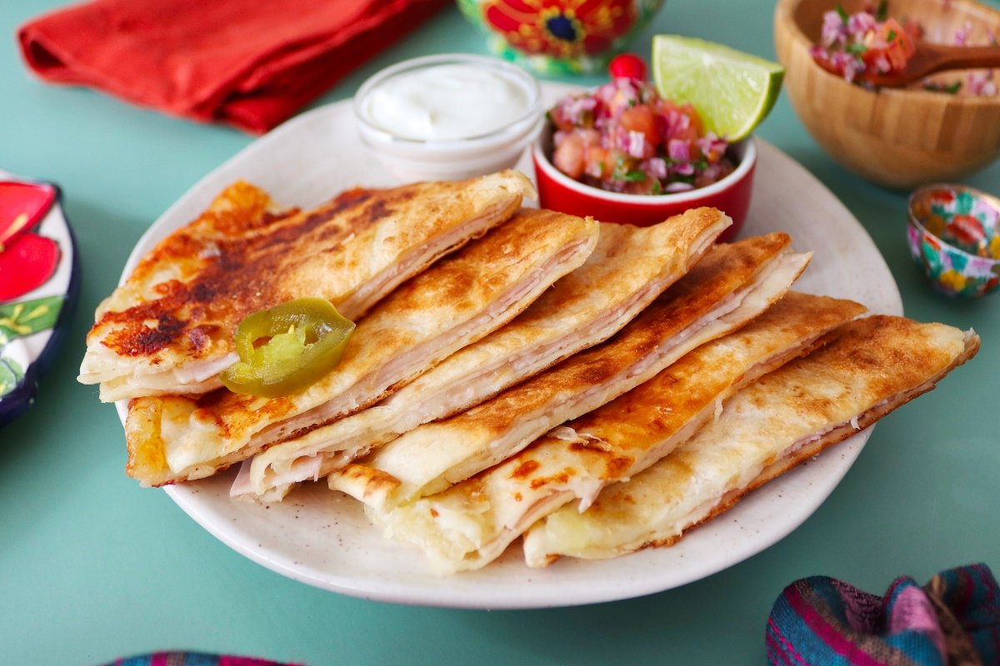

Sincronizadas

Si buscas una comida improvisada y rápida, esta receta mexicana de sincronizadas de jamón y queso es el plato ideal.
Además, van acompañadas de pico de gallo y crema agria para hacerlas aún más deliciosas.
Ingredientes:
- Aguacate
- Tortllas de harina
- Jamón
- Queso
Pasos:
- Comenzamos poniendo una plancha o sartén a fuego medio. Cuando esté caliente ponemos 1 tortilla de trigo XL.
- Sobre la tortilla de trigo ponemos una primera capa de 4 lonchas de jamón dulce.
- A continuación, ponemos 4 lonchas de queso manchego semi curado y partimos 100 g de mozzarella en trozos que iremos repartiendo por toda la superficie de la tortilla de trigo.
- Sobre la primera capa de jamón dulce y quesos, ponemos otra segunda capa con 4 lonchas de jamón dulce.
- Por último, cubrimos con una segunda tortilla de trigo XL.
Menu